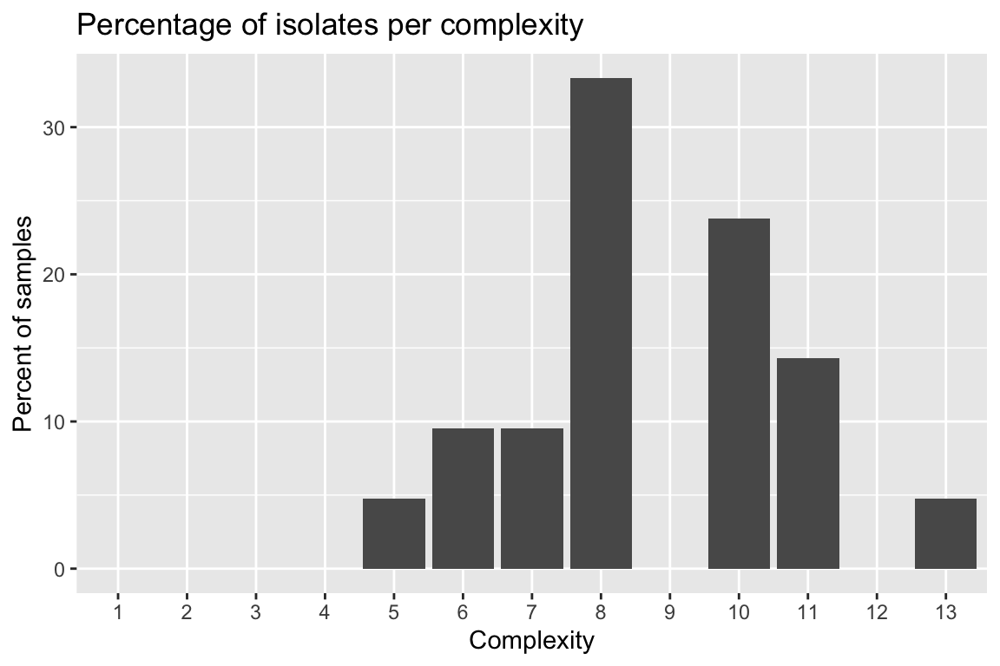
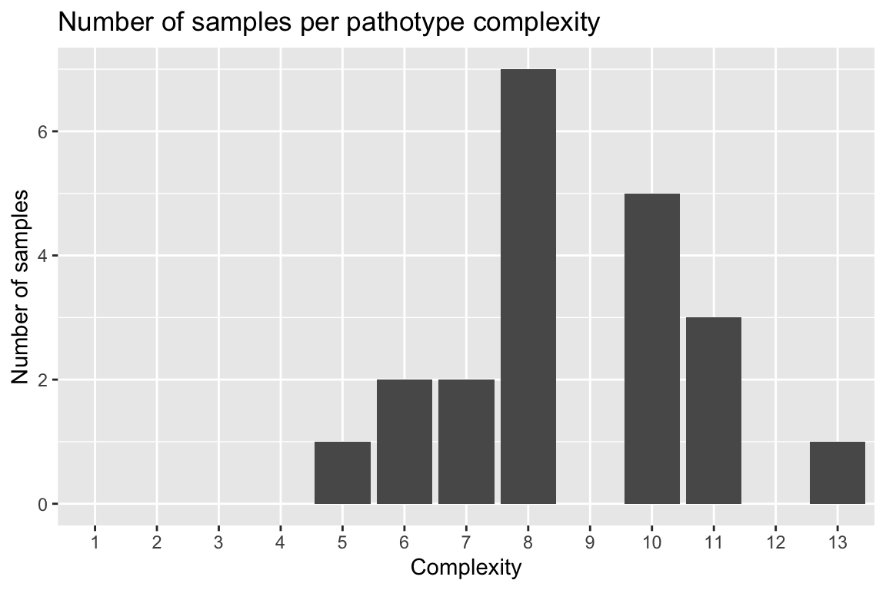
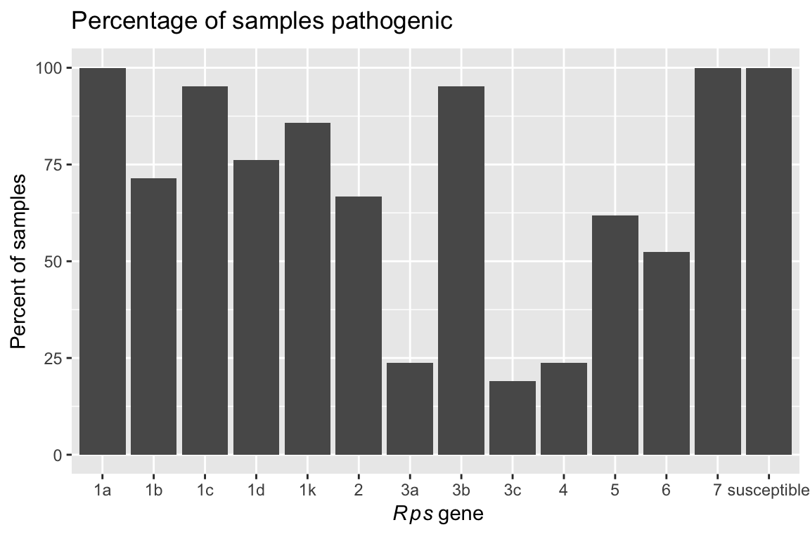
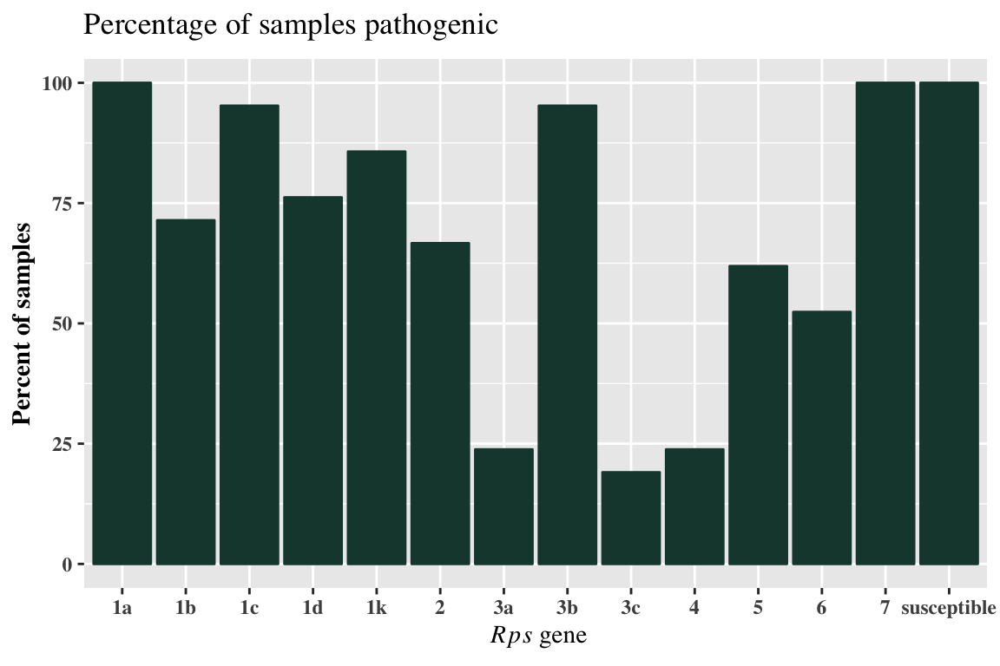

hagis: Tools for Analysis of Phytophthora Pathotype Complexities, Distributions and Diversity
Austin McCoy and Zachary Noel
2019-04-10
Source:vignettes/hagis.Rmd
hagis.RmdGetting Started With hagis
First you’ll want to load in your data set, for right now let’s use a practice data set made for the hagis package and name it Pathotype.Data:
Pathotype.Data <- system.file("extdata", "practice_data_set.csv", package = "hagis")
Pathotype.Data <- read.csv(Pathotype.Data, stringsAsFactors = FALSE)
head(Pathotype.Data)
#> Isolate Line Rps Total HR..1. Lesion..2.
#> 1 1 Williams susceptible 10 0 0
#> 2 1 Harlon Rps 1a 10 4 0
#> 3 1 Harosoy 13xx Rps 1b 8 0 0
#> 4 1 L75-3735 Rps 1c 10 10 0
#> 5 1 PI 103091 Rps 1d 9 2 0
#> 6 1 Williams 82 Rps 1k 10 0 0
#> Lesion.to.cotyledon..3. Dead..4. total.susc total.resis perc.susc
#> 1 0 10 10 0 100
#> 2 0 6 6 4 60
#> 3 0 8 8 0 100
#> 4 0 0 0 10 0
#> 5 1 6 7 2 78
#> 6 0 10 10 0 100
#> perc.resis
#> 1 0
#> 2 40
#> 3 0
#> 4 100
#> 5 22
#> 6 0We see in the Rps column that each gene is prepended with “Rps”. We can remove this to make the graphs cleaner and report the genes in tables as we would in a manuscript. Note that this will work for any string you enter as the first value, pattern. The second string, replacement, is the replacement value, the third, x, is where to look and make the changes.
Pathotype.Data$Rps <- gsub(pattern = "Rps ", replacement = "", x = Pathotype.Data$Rps)
head(Pathotype.Data)
#> Isolate Line Rps Total HR..1. Lesion..2.
#> 1 1 Williams susceptible 10 0 0
#> 2 1 Harlon 1a 10 4 0
#> 3 1 Harosoy 13xx 1b 8 0 0
#> 4 1 L75-3735 1c 10 10 0
#> 5 1 PI 103091 1d 9 2 0
#> 6 1 Williams 82 1k 10 0 0
#> Lesion.to.cotyledon..3. Dead..4. total.susc total.resis perc.susc
#> 1 0 10 10 0 100
#> 2 0 6 6 4 60
#> 3 0 8 8 0 100
#> 4 0 0 0 10 0
#> 5 1 6 7 2 78
#> 6 0 10 10 0 100
#> perc.resis
#> 1 0
#> 2 40
#> 3 0
#> 4 100
#> 5 22
#> 6 0This practice data set contains 21 isolates’, Isolate, virulence data on a set of 14 differential soybean cultivars, Line. This package uses the percentage of susceptible, inoculated, plants to determine effective resistance genes, pathotype diversity and frequency, as well as individual isolates pathotypes.
To help ensure that the proper data are used in calculations, the user is asked to provide some information that instruct hagis about what data to use.
Function Arguments Used in hagis
We have strived to make hagis as intuitive to use as possible. Part of that means that we have used the same arguments for the three main functions, summarize_rps(), calculate_complexities() and calculate_diversity(). Each of these functions take the same arguments:
xthis is your data set name, e.g.Pathotype.Datafrom the example above, allows for the function to identify where it will be pulling these columns (and their associated row values) from to use (i.e. your data collection Excel spreadsheet)cutoffthis value sets the cutoff for susceptible reactions. For example,cutoff = 60means that all genes with 60% or more of the plants rated susceptible will be treated as susceptible. You can change this to whatever percentage you require for your study.controlspecifies the value used in theRpscolumn to denote a susceptible control used in the studysamplespecifies the column header for the column which identifies the isolates testedRpsspecifies the column header for the column which identifies the genes testedperc_suscspecifies the column header for the column which identifies the percent susceptible plants for each gene
Ordinarily you would use functions in hagis or other R packages like this:
Rps.summary <- summarize_rps(x = Pathotype.Data,
cutoff = 60,
control = "susceptible",
sample = "Isolate",
Rps = "Rps",
perc_susc = "perc.susc")However, because the functions share arguments we can create a list() of arguments and share them with some of the functions from hagis. First, we make a list of the arguments that summarize_rps(), calculate_diversities() and calculate_complexities() use that specify our inputs based on our example data:
hagis_args <- list(x = Pathotype.Data,
cutoff = 60,
control = "susceptible",
sample = "Isolate",
Rps = "Rps",
perc_susc = "perc.susc")Now that we have a list of arguments, we can now save time entering the same data for each function and also avoid typos or entering different cutoff values, etc. between the functions.
Determination of Effective Resistance Genes
Below is an example of tables and graphics that can be produced using the summarize_rps() function to identify effective resistance genes tested against the sampled Phytophthora sojae population.
The summarize_rps() function allows you to produce a detailed table showing the number of isolates each gene is susceptible to (N_susc), as well as offering a percentage of the isolates tested which are pathogenic on each gene (percent_pathogenic).
Rps.summary <- do.call(summarize_rps, hagis_args)
Rps.summary
#> Rps N_susc percent_pathogenic
#> 1: susceptible 21 100.00
#> 2: 1a 21 100.00
#> 3: 1b 15 71.43
#> 4: 1c 20 95.24
#> 5: 1d 16 76.19
#> 6: 1k 18 85.71
#> 7: 2 14 66.67
#> 8: 3a 5 23.81
#> 9: 3b 20 95.24
#> 10: 3c 4 19.05
#> 11: 4 5 23.81
#> 12: 5 13 61.90
#> 13: 6 11 52.38
#> 14: 7 21 100.00Using the pander library we can make the table much more attractive in Markdown.
| Rps | N_susc | percent_pathogenic |
|---|---|---|
| susceptible | 21 | 100 |
| 1a | 21 | 100 |
| 1b | 15 | 71.43 |
| 1c | 20 | 95.24 |
| 1d | 16 | 76.19 |
| 1k | 18 | 85.71 |
| 2 | 14 | 66.67 |
| 3a | 5 | 23.81 |
| 3b | 20 | 95.24 |
| 3c | 4 | 19.05 |
| 4 | 5 | 23.81 |
| 5 | 13 | 61.9 |
| 6 | 11 | 52.38 |
| 7 | 21 | 100 |
Pathotype Complexities
Pathotype frequency, distribution as well as statistics such as mean pathotype complexity can be calculated using the calculate_complexities() function. This function will return a list() of two data.table() objects, grouped_complexities and individual_complexities.
complexities <- do.call(calculate_complexities, hagis_args)
complexities
#>
#> Grouped Complexities
#> complexity frequency distribution
#> 1: 1 0.00 0
#> 2: 2 0.00 0
#> 3: 3 0.00 0
#> 4: 4 0.00 0
#> 5: 5 4.76 1
#> 6: 6 9.52 2
#> 7: 7 9.52 2
#> 8: 8 33.33 7
#> 9: 9 0.00 0
#> 10: 10 23.81 5
#> 11: 11 14.29 3
#> 12: 12 0.00 0
#> 13: 13 4.76 1
#>
#>
#> Individual Complexities
#> sample N_samp
#> 1: 1 10
#> 2: 2 10
#> 3: 3 10
#> 4: 4 8
#> 5: 5 8
#> 6: 6 8
#> 7: 7 8
#> 8: 8 8
#> 9: 9 6
#> 10: 10 5
#> 11: 11 6
#> 12: 12 8
#> 13: 13 7
#> 14: 14 8
#> 15: 15 11
#> 16: 16 7
#> 17: 17 10
#> 18: 18 10
#> 19: 19 11
#> 20: 20 11
#> 21: 21 13
#> sample N_sampOnce again, using pander we can make these tables much more attractive in Markdown. Since complexities is a list() object, we can refer to each object directly by name and print them as follows.
| complexity | frequency | distribution |
|---|---|---|
| 1 | 0 | 0 |
| 2 | 0 | 0 |
| 3 | 0 | 0 |
| 4 | 0 | 0 |
| 5 | 4.76 | 1 |
| 6 | 9.52 | 2 |
| 7 | 9.52 | 2 |
| 8 | 33.33 | 7 |
| 9 | 0 | 0 |
| 10 | 23.81 | 5 |
| 11 | 14.29 | 3 |
| 12 | 0 | 0 |
| 13 | 4.76 | 1 |
| sample | N_samp |
|---|---|
| 1 | 10 |
| 2 | 10 |
| 3 | 10 |
| 4 | 8 |
| 5 | 8 |
| 6 | 8 |
| 7 | 8 |
| 8 | 8 |
| 9 | 6 |
| 10 | 5 |
| 11 | 6 |
| 12 | 8 |
| 13 | 7 |
| 14 | 8 |
| 15 | 11 |
| 16 | 7 |
| 17 | 10 |
| 18 | 10 |
| 19 | 11 |
| 20 | 11 |
| 21 | 13 |
Using summary() will return the mean, standard error (se) and standard deviation (sd) for pathotypes of a complexities object.
| Mean | SD | SE |
|---|---|---|
| 8.714 | 2.004 | 0.4372 |
Plotting Complexities Data
Two functions are provided to plot the complexities depending on your needs. If you need the frequency, use autoplot(complexties, type = "frequency"), or if you desire the distribution autoplot(complexities, type = "distribution"). Both return the same graph, only the y-axis change; percent for frequency and n for distribution.


Diversity Indices, Frequency of Unique Pathotypes and Individual Isolate Pathotypes
Diversity indices are extremely useful when trying to identify differences between two populations. Here, pathotype diversities are calculated for the sample population using the calculate_diversities() function. Likewise, individual isolates’ pathotypes, number of isolates used in the study, number of pathotypes within the study are calculated.
diversity <- do.call(calculate_diversities, hagis_args)
diversity
#>
#> hagis Diversities
#>
#> Number of Samples 21
#> Number of Pathotypes 19
#>
#> Indices
#> Simple 0.9047619
#> Gleason 5.912257
#> Shannon 2.912494
#> Simpson 0.9433107
#> Evenness 0.9891509Or using pander for reporting, a nice table is generated.
| Simple | Gleason | Shannon | Simpson | Evenness |
|---|---|---|---|---|
| 0.9048 | 5.912 | 2.912 | 0.9433 | 0.9892 |
Table of Diversities
To generate a table of diversities, use diversities_table(). hagis will automatically create a pander object for you. This is because it is much easier to read the resulting table in the console than the raw data.frame and insert into reports.
| Frequency | Pathotype |
|---|---|
| 1 | 1a, 1b, 1c, 1d, 1k, 2, 3a, 3b, 3c, 4, 5, 6, 7 |
| 1 | 1a, 1b, 1c, 1d, 1k, 2, 3a, 3b, 3c, 5, 7 |
| 1 | 1a, 1b, 1c, 1d, 1k, 2, 3a, 3b, 3c, 6, 7 |
| 1 | 1a, 1b, 1c, 1d, 1k, 2, 3b, 4, 5, 6, 7 |
| 1 | 1a, 1b, 1c, 1d, 1k, 2, 3b, 4, 5, 7 |
| 1 | 1a, 1b, 1c, 1d, 1k, 2, 3b, 4, 6, 7 |
| 2 | 1a, 1b, 1c, 1d, 1k, 2, 3b, 7 |
| 1 | 1a, 1b, 1c, 1d, 1k, 2, 6, 7 |
| 1 | 1a, 1b, 1c, 1d, 1k, 3a, 3b, 5, 6, 7 |
| 1 | 1a, 1b, 1c, 1d, 1k, 3b, 7 |
| 1 | 1a, 1b, 1c, 1k, 2, 3b, 3c, 4, 6, 7 |
| 1 | 1a, 1b, 1c, 1k, 3b, 5, 6, 7 |
| 1 | 1a, 1b, 1c, 1k, 3b, 5, 7 |
| 1 | 1a, 1b, 1d, 1k, 2, 3a, 3b, 5, 6, 7 |
| 2 | 1a, 1c, 1d, 1k, 2, 3b, 5, 7 |
| 1 | 1a, 1c, 1d, 1k, 2, 3b, 6, 7 |
| 1 | 1a, 1c, 1d, 3b, 5, 7 |
| 1 | 1a, 1c, 3b, 5, 6, 7 |
| 1 | 1a, 1c, 3b, 5, 7 |
To generate a table of individual pathotypes, use individual_pathotypes(). Here again, hagis provides a pander object for ease of use.
Table of Individual Pathotypes
| Sample | Pathotype |
|---|---|
| 1 | 1a, 1b, 1d, 1k, 2, 3a, 3b, 5, 6, 7 |
| 10 | 1a, 1c, 3b, 5, 7 |
| 11 | 1a, 1c, 3b, 5, 6, 7 |
| 12 | 1a, 1b, 1c, 1d, 1k, 2, 6, 7 |
| 13 | 1a, 1b, 1c, 1d, 1k, 3b, 7 |
| 14 | 1a, 1b, 1c, 1k, 3b, 5, 6, 7 |
| 15 | 1a, 1b, 1c, 1d, 1k, 2, 3b, 4, 5, 6, 7 |
| 16 | 1a, 1b, 1c, 1k, 3b, 5, 7 |
| 17 | 1a, 1b, 1c, 1d, 1k, 2, 3b, 4, 5, 7 |
| 18 | 1a, 1b, 1c, 1d, 1k, 3a, 3b, 5, 6, 7 |
| 19 | 1a, 1b, 1c, 1d, 1k, 2, 3a, 3b, 3c, 6, 7 |
| 2 | 1a, 1b, 1c, 1k, 2, 3b, 3c, 4, 6, 7 |
| 20 | 1a, 1b, 1c, 1d, 1k, 2, 3a, 3b, 3c, 5, 7 |
| 21 | 1a, 1b, 1c, 1d, 1k, 2, 3a, 3b, 3c, 4, 5, 6, 7 |
| 3 | 1a, 1b, 1c, 1d, 1k, 2, 3b, 4, 6, 7 |
| 4 | 1a, 1c, 1d, 1k, 2, 3b, 5, 7 |
| 5 | 1a, 1c, 1d, 1k, 2, 3b, 6, 7 |
| 6 | 1a, 1c, 1d, 1k, 2, 3b, 5, 7 |
| 7 | 1a, 1b, 1c, 1d, 1k, 2, 3b, 7 |
| 8 | 1a, 1b, 1c, 1d, 1k, 2, 3b, 7 |
| 9 | 1a, 1c, 1d, 3b, 5, 7 |
Advanced Plotting
hagis Autoplot Objects
Since hagis uses ggplot2 to generate its plots, you can easily theme the outputs using common ggplot2 themes and other options.

Changing the ggplot2 Theme
Use ggplot2’s theme_minimal() theme.
Make a Horizontal Plot
If your Rps gene names are too long, flipping the axis can make the graph more legible without rotating the x-axis labels.

Use Colours in Autoplot Objects
You can use named, e.g. “red”, “yellow”, “blue” colors in R or you can use custom hexadecimal color codes. Illustrated below is using MSU Green, hex code #18453b, using theme_bw() with a serif font.
autoplot(Rps.summary, type = "percentage", color = "#18453b") +
theme_bw() +
theme(
text = element_text(
face = "bold",
family = "serif"
))